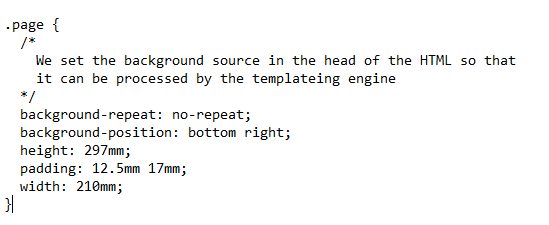

Troubleshooting
From Help wiki
Main Page → General Information → Catch-e Support | Troubleshooting → Session cross-overs
System Locks
System Locks
Records are locked by the system if a user is editing the record or running a process that updates the record (E.g. Billings, Payments, Receipts)
If you try to access a record that is locked, you will alerted and prevented from using the locked record.
The alert shows the login of the user who has locked the record.
| Alert | Comments |
|---|---|
| Edit | |
| Table {table_name} already locked by user: {user_login} | The table cannot be edited while another user is editing it. Wait and try again later. Visit System Locks for more details. |
Suggested steps:
- Wait a short time for the user to finish their editing process.
- Contact the named user and ask them to finish the work they are doing and/or exit the record they have open.
- If the user is editing or processing a different record and you still get the lock message, they have probably orphaned that lock.
Orphaned Locks
Records can be orphaned if they are locked, but the user is no longer editing that record.
Orphaned locks happen for two main reasons:
- A record was in edit mode and the user closed down their browser window instead of logging out of the system. Please DO NOT do this.
- The user's internet connection dropped out. Even a lost connection which lasts only an instant may mean the system is unable to find related locks related to the session concerned.
| | Users - do not shut down your browser screen when you are in the middle of a process or have a records open in edit mode. This causes orphaned locks. |
To fix orphaned locks:
- The user should logout of the system correctly and then log back in again. This should remove the orphaned lock/s.
- Logout by clicking on the Logout
 icon. This creates a logout record and closes out the users current session.
icon. This creates a logout record and closes out the users current session.
- If the user is running two session, they will need to repeat this process for both of their sessions.
- Orphaned locks on contracts and quotes are usually tidied up by the system, by a process which runs every 5 minutes.
- If you have tried to remove the locks by logging back in and you have waited 10 minutes and the lock has not be removed, please escalate to your System Administrator.
- You System Administrator may email Catch-e Support if required to check and remove the locks for you.
Login
403 Forbidden
If you get a '403 Forbidden' message when you are logging in, you are trying to log in from a Geo-blocked location.
To login, you will need to either
- Run a VPN connection from an unblocked location (like Australia)
- Arrange for the IP addressg to be whitelisted. This can only be done if you are running a static IP address. Go to the process page Whitelist an IP address for the steps to do this.
Invalid token
If a user clicks on the URL link sent by the Forgot Password? feature and gets this error, it means either
- They have clicked on the link previously (it will only work once) or
- Their email system has triggered the URL while running security tests for phishing (thus using up the one-time link)
In both cases, the easiest way to manage this is to go to Users / Password and Issue a temporary password to the user.
My browser tells me to change this password
Your browser has a monitoring tool enabled that checks the passwords you enter against databases that store known stolen credentials.
If your browser alerts you about this, it means your login password is no longer secure.
You can confirm this by using a site like haveibeenpwned.com/Passwords to check this.
Below are our recommendations if you get this message:
- Change your password immediately
- Use a good password manager to help you generate and maintain strong, unique passwords for each different system or website you use.
- Maintain a unique password for your Catch-e login.
- Do not use your Catch-e login password on any other system or website.
Site {Client URL} unavailable cannot connect to endpoint!
Phone Catch-e Support to investigate this issue for you.
Sessions
Possible session cross-over detected
If the system detects two windows using the same session, one window will return this error
message and the other will be returned to the login screen.
It is intended to stop users from opening and using a second Catch-e session from the same login. In
rare situations, this can cause data issues.
Downloads
I can't see my printed report or file download in Chrome
The "Enable download bubble" flag was removed in Chrome version 119.
If you are using this version (or a later one) you will not see that your report or file has downloaded.
To access your file from your download folder
- Click on Ctrl + J to open a download folder tab in Chrome or
- Keep Windows Explorer open in the background and check the Download folder for your file
Visit the Operating System and Browser settings page to check and update your download settings for Chrome.
Quote download error 404 in Chrome
- If you are seeing a 404 error when clicking 'Open' to preview a quote, and you're using Google Chrome as the default viewer, this is likely due to Chrome's PDF handling settings
To fix this issue, follow the steps below:
1. Open Chrome settings. 2. Navigate to the 'Privacy and security' section. 3. Click on 'Site Settings'. 4. Scroll down and click on 'PDF documents'. 5. Enable the option: "Open PDFs in Chrome" instead of downloading them.

Emails
An email we sent was not received
Visit the Mail Failed page for details about how emails can fail and the process you can follow to monitor bounced emails.
mailQuery Event Email - created without an email icon
An event email can be created without a corresponding Mail Queue record in the following circumstances
- It was created from a mailQuery scheduler job
- The recipient_1_to_address in the query is blank.
An email record cannot be created in this situation, because you can't re-send a mailQuery email from an Event tab.
To fix this, check where the required email address comes from and update the source record. (E.g. Client contact, Driver, etc).
Quotes
Quotes / Search "Rate" doesn't match the Lease Total
If a quote has a budget that is no longer also stored in the linked Contract Types / Accruals tab, it will form part of the Quotes / Lease Totals, but it will not be part of the calculated Quotes / Search screen "Rate" amount.
To fix this, go to the quote, Edit and then Save it. This will cause the links on the quote to be checked and restored.
Quotes / Contract
Quotes / Contract "Term" - I can't enter the term I want
There is a maximum value you can enter into the "Term" field, but it can be changed.
To update this, go to Setup / Reference Data → gb_controls "maximum_term" and edit the stored value.
Quotes / Contract - Quote PDF - it shows a negative Pre Tax amount
This situation can arise if you are quoting the FBT using Operating Cost Method, but the "FBT Value" has been locked after being calculated with the Statutory Method. In this situation, the calculated FBT value is too high.
Uncheck the lock and let the system re-calculate the FBT value with Operating Cost Method.
Quotes / Contract - Quote PDF - 404 download error in Chrome
- If you are seeing a 404 error when clicking 'Open' to preview a quote, and you're using Google Chrome as the default viewer, this is likely due to Chrome's PDF handling settings
To fix this issue, follow the steps below:
1. Open Chrome settings. 2. Navigate to the 'Privacy and security' section. 3. Click on 'Site Settings'. 4. Scroll down and click on 'PDF documents'. 5. Enable the option: "Open PDFs in Chrome" instead of downloading them.
Quotes / Vehicle
Quotes / Vehicle - I can't find a variant
If you can't select a new vehicle model, it's likely that the data hasn't been added to your database yet by your provider.
Check that your scheduler job is running OK. This will be either
- System / Scheduler → Method → qt / glass / importVehicleData
- System / Scheduler → Method → qt / red_book / importVehicleData
If the job is running OK, contact your data provider to find out when the records are expected to be added.
Sometimes there is a delay between seeing variants on the RedBook or Glass's website and your data feed.
If your data provider has confirmed the variant has been added to your feed, contact Catch-e Support and provide a RedBook Code or an NIVC code for investigation.
Quotes / Finance
Quotes / Finance - "GST Claimable" is limited for an exempt vehicle
If you are quoting a variant that is LCT exempt and the "GST Claimable" amount is being limited, you can change the variant's "Vehicle Type" so this does not happen.
To do this, go to the GST Claimable page and follow the update steps listed there.
Quotes / Finance - "GST Claimable" is not correct
If you are quoting a variant that has GST that is more than can be claimed, then the "GST Claimable" amount is reduced to the allowable amount.
This amount populates into the Quotes / Finance "GST Claimable field by default from the control [gb_controls]maximum_gst_claimable.
If this default is not correct, update the global control. Go to 'Setup / Reference Data → gb_controls and update the control 'maximum_gst_claimable'.
Quotes / Finance - "Fee" does not match the financier's fee
This field displays the monthly administration fee charged by your financier. This will be added to the finance amount calculation and updates the 'FIN' budget also.
If the financier is Macquarie Leasing, the amount entered must be GST exclusive. This will ensure that a successful application is made via the Maclease Partner Interface.
To update the amount that defaults in, go to Setup / Reference Data → qt_financier_posting_map_defaults and select the required "Financier" and "Contract Type". Edit the "Fee" amount.
Quotes / Lease
If your quote budgets are calculating with a deferral, but you want the budgets to calculate over the term, check the following
- Setup / Reference Data 'qt_financier_posting_map_defaults' “Finance Budget Term Deferred” is either 'any' or 'no'.
- Clients / Contract Defaults "Finance Budget Term Deferred" is un-checked
Go to the Months Deferred page for more set-up details.
Quotes / Lease - Fuel (F) profile "Litres per 100KM" is not right
The values stored for each variant's fuel usage come from data imports provide by either Glasses or RedBook. These values are not normally altered by Catch-e.
Glasses or RedBook are the original source of this data, so refer to them directly to ask about set values,
Quotes / Lease - Carbon Emission Offset (CEO) does not calculate
Your Carbon Emissions Offset (CEO) budget will not calculate if:
- the amount stored in the variant's "CO2 Emissions" field is blank.
- you are using the [gb_controls] carbon_emissions_offset_per_tonne calculation method.
If this is the case:
- Ask your data provider (RedBook or Glasses) to advise you of the amount.
- Go to the Setup / Reference Data → qt_variants "CO2 Emissions" field and add this in.
Quotes / Lease - Redundancy Insurance - does not default into new quotes
If Contract Types / Details "Quote Redundancy Insurance" is checked and "Redundancy Insurance" does not calculate, there are three reasons this can happen.
- There are no records stored in the [qt_redundancy_insurance_rates] table. If the rates are missing, "Redundancy Insurance" will not default on, as it cannot be 0.
- You have stopped using "Redundancy Insurance" and the [qt_redundancy_insurance_rates] table are set to 0 to prevent rates from calculating. If the rates are 0, "Redundancy Insurance" will not default on, as it cannot be 0.
- The chosen vehicle has a value that is higher than the [qt_redundancy_insurance_rates]upper_limit value of the available records. In this case, no records are considered a match and no value will be applied.
To investigate and check your set-up, exporting data from the table [qt_redundancy_insurance_rates] and review the current values in this table.
Quotes / Lease - Tyre and Rim Insurance - plans don't show
If existing Tyre and Rim plans do not show in the Quotes / Lease "Tyre and Rim" selection list, your plan records may have recently been updated.
If the field [qt_tyre_rim_insurance_plans]state is NULL, create an upload file where the [qt_tyre_rim_insurance_plans]state field empty (i.e. do not include the text 'NULL')
Use Import data to a table to upload the file to correct the data.
Quotes / Lease - Lease Inclusion Plans - the Inclusion is visible, but the check box is disabled
The quote's "Effective Date" must be on or after the date stored in [qt_inclusion_plans]effective_date.
Contracts
Contracts / Finance
I can't edit the Financier field
Contracts / Finance "Financier" becomes a read only field when an active payment schedule is in place.
If you have created a payment schedule for the wrong financier, delete the payment schedule and then update the "Financier".
Process page: Delete a payment schedule
Contracts / Insurance
Fire Service Levy does not match expected value
Contracts / Insurance "Fire Service Levy" is populated from quotes when comprehensive insurance is calculated.
Check that Quotes / Contract "Delivery State" and the "Insurance Loc." state are the same.
Fire Service Levy is calculated using [qt_quotes]state.
Stamp Duty does not match expected value
Contracts / Insurance "Stamp Duty" is populated from quotes when comprehensive insurance is calculated.
Check that the values in [qt_insurance_rates]base_rate and [qt_insurance_rates]cost are the same.
[qt_insurance_rates]base_rate is used to calculate stamp duty and [qt_insurance_rates]cost is used in other parts of the calculation.
Contracts / Lease
The Finalise button is disabled
Enable rules
- The contract belongs to the 'Novated' group.
- A "Suspend Date" has been entered on the contract.
- There are no transactions in 'Pending' or 'On Hold' status in the Payments and Maintenance tabs.
- At least one period has been billed.
Even if all the conditions for using the Finalise button have been met, sometimes required data is missing if the contract has been migrated into the Catch-e System.
In these situations, the Finalise feature cannot be used and you will need to finalise the contract manually.
The Un-Post button is disabled
- The selected period is pending
- The selected period contains adjustment records. These must be uposted in reverse sequence, and the records must then be deleted to then enable the previous record to be unposted.
- E.g. Unpost Period 4.3, then delete it.
- Unpost Period 4.2, then delete it.
- Period 4 can then be unposted.
Contracts / Events Emails
Go to Contracts / Events for the general alert messages when event emails wont send.
My event email shows an \ before the apostrophe
If you look at an event email in the Contracts / Events pop-up, a '\' may be displayed before the apostrophe.
This is a function of the code behaviour of this pop-up. The '\' is not stored in the email and does not display in the Mail Queue or the recipient's email.
To check this, find the email in the Mail Queue and review it there.
7 Reasons why your Certificate of Currency event email is not working
| Alert message | Problem area |
|---|---|
| Supplier not set! | The contract does not has an "Insurer" recorded on the Contracts / Insurance screen |
| COC Template not set for (supplier_code) name | The "Insurer" does not have a valid "COC Template You need to link the Certificate of Currency email template to the Insurance supplier record |
| Report template missing for event type 'COC'! Please contact your system administrator | The template is missing or set to inactive for the insurer |
| Error adding mail, support has been notified! | The contract does not have a linked driver |
| Mail not created! | The contract does not have a linked financier |
| Mail not created! | The contract is not linked to a variant. Go to Contracts / Vehicle and use the "Description" lookup window to open the Advanced Vehicle Search to select and save the variant. |
| Mail not created! | The driver does not have an email address |
Contracts / FBT
Benefit Type is Operating and FBT Amounts show as Statutory
Operating Method FBT is not calculated and returned on this screen as a range of transaction data is required to do this.
To check the FBT calculations for Operating Method contracts, go to Fleet / Administration / Reports and run the FBT Operating report.
Driver Report does not match the selected month
If a user (internal or external) does not have there browser caching setting set correctly, the Driver Report PDF output may not match the selected month.
In Internet Explorer, ask the user to check their settings. They should be:
Tools/General/Settings
- Check for newer versions of stored pages → Select "Every time I visit the webpage"
This is to prevent generated reports from being cached.
Reports and Buttons are missing
Reports and buttons will be missing from this screen if the required report templates are not defined for the Contract Type.
Fix this by going to the Contract Types / Details tab and updating the two following fields
- "FBT Statutory Template"
- "FBT Operating Template"
Billing
Missing a contract from the billing process
If you cannot see a contract you are expecting in a billing selection, check the following;
- The contract must have a Contracts / Billing "Start Periodic" date
- The contract must have a "Registration Number" that is not 'ORDER'.
- Packaged Contracts (contracts that are linked to an item) can only be viewed and invoiced from the Billing / Periodic screen if you are logged in as a Channel Accounts role.
Suspended contract is not billing
Contracts being billed on or after the "Suspend Date" are not selected for billing. To invoice a suspended contract, do one of the following
- Enter a billing selection date that is before the "Suspend Date". E.g. If the "Suspend Date" is '24/09/2021', then the billing selection date must be on or before '23/09/2021'
- Use the Contracts / Lease Invoice Now hyperlink to invoice the selected period (this will only work if the period date is before the "Suspend Date".
- Remove the contract's "Suspend Date", run the billing and then re-enter the "Suspend Date".
Problem creating Invoices (Error codes: 102, 103, 203)
When the "Invoice" button is clicked, the billing process locks relevant tables. If the session is interrupted or terminated (e.g. by closing the window) without using the "Abort" button the locks will remain in place, resulting in subsequent errors advising that billing is locked by the relevant user.
If the user locks are cleared a subsequent error such as:
Problem creating Invoices!Combined->createCombined:2
may result - if so log out of Catch-e entirely and log back in to process billing. Contact support if further problems are encountered.
If you encounter one of these :
Problem creating Invoices/Combined->createCombined:103
Problem creating Invoices/Combined->createCombined:102
Problem creating Invoices/Combined->createCombined:203
"Abort" the process and re-try.
Problem creating Invoices (Error code: 202)
When trying to create an invoice and you see an error with the code '202' in it, this can happen if records in the table [fm_contract_budgets] have been incorrectly or incompletely updated by a web service or a script update from outside the user billing screens. E.g. [fm_contract_budgets]billing_id is populated, but the record is still in 'pending' status.
If you encounter an error like this :
Problem creating Invoices/Periodic->createPeriodic:202
"Abort" the process and contact Catch-e Support for assistance.
Automated Billing
Automated billing did not email
Automated billing is done by scheduler jobs, and a likely cause of issues is that the job did not run
- Go to the System / Scheduler screen and select "Module' - 'fm', "Class" - 'billings' and click on Go to find your billing jobs.
- Check the "Last Message" column for a recorded issue. E.g. 'Periodic billing locked by: {user_login}
- Use the Run Now button to run the job immediately.
Billing jobs will not run if user are editing records in the system. Catch-e recommend billing jobs be set to run out of working hours. 5am works well.
Reg Or CTP Renewals
My import file fails
When I try to import a Reg or CTP Renewal file, it says 'Validation failed, bad date in column G!'
- You have saved the file using an incompatible CSV file type (there are many files with a *.csv format that are subtly different), E.g. 'CSV UTF-8 (Comma delimited)(*csv)
- Save again in excel using Save as type: CSV (Comma delimited) (*.csv)
or
- You have incorrect header names in the file
- Download REG_CTP_Import.csv and refresh your file with the correct headers.
Payments
The Remittance email recipient is in-correct
There are two different contacts stored on your supplier's record and the remittance advice can be set-up to use either of these.
Go to Payment Advice Email set-up for details and compare with the supplier's contact details, your templates may be using the other contact.
You can see 'Pre-Post' status records
'Pending' records can get stuck at 'Pre-Post' status if you initiate a payment that fails part-way through. Your browser has either been closed or disconnected from the internet before the payment transaction was posted or aborted.
To return these records to 'Pending' status, go to Fleet / Payments / Periodic and click on the Go button, all 'Pre-Post' records will be re-set to 'Pending' status.
If this is unsuccessful, please contact Catch-e Support, who will delete a lock on table 'pl_payables'.
You should then be able to click on the Go button, as previously described, to re-set all 'Pre-Post' records to 'Pending' status.
You are missing payment records
Check the following possible reasons;
- The Payment Schedule has not been created
- The Payment Schedule has been created, but a supplier not entered
- The Payment Schedule has reached it's end and no outstanding (pending) payments remain
- "Stop Payment" has been put on the contract - all future payments are stopped
- The Contract has been suspended / terminated
You are missing a Bank Account
If using multiple bank accounts - check your set-up by following the steps below;
- Process all payments for all listed bank accounts.
- Select the following filters and execute; "Status" = 'Pending', "Bank Account" = '--All--'.
- Any remaining 'Pending' payment records will be displayed.
- Click on the "Contract Id" hyperlink of a remaining record to navigate to the contract and from there go to the Contracts / Contract tab to see what's in the "Company" field.
- If the "Company" record is missing, it should be populated.
- If there is a stored "Company" record, it is likely the company has not been set-up with a bank account.
- Once a valid bank account is set up against that company, payment can be made.
Changing from single to multiple bank accounts
If you have executed a filter where a "Bank Account" has been selected and no payments appear on screen (and you are expecting them), contact Catch-e Support to investigate.
It's likely to be a set-up issue where there is a record in [gl_bank_account_maps] where gl_bank_account_aba_mappings]company_id = '0' or gl_bank_account_aba_mappings]process_type is not 'payables'. This is only used when a single bank account is being used for all payments.
You can't unpost a batch
If you're having trouble unposting a batch, go to the Unpost a payments batch page and follow the steps exactly.
A common trap is that the field "Payment Type" must be left at the '--All--' setting.
Receipting
Import file troubleshooting
I can't locate an invoice row to receipt
Invoice rows can become hidden in the receipt screens when
- The Allocate / Item '"Reg No" field is populated
- The target contract has had a registration change
In this situation, invoice rows have been filtered out because the "Reg No" stored on the invoice does not match the receipt filter.
In this case, filter by "Client" or "Driver" to see all the available records.
Banking Software shows odd details in fields. E.g. <tcxspan txchref="123...
Check your browser extensions.
If you are using PABX extensions for phone dialling from your computer, it can treat some fields as though they should be phone numbers and corrupt the details in the fields.
Bookings
Location Charges don't show up
Check the posting class maps of the replacing/order vehicle have been set-up. See Bookings Setup - Contract Types for more details.
GST does not calculate
Check that the "G" column in the Contract Type "BOOK" or the Contract Type for the replacing/order vehicle in the booking is "Y".
Location Charges don't show up
Check the posting class maps of the replacing/order vehicle have been set-up. See Bookings Setup - Contract Types for more details.
GST does not calculate
Check that the "G" column in the Contract Type "BOOK" or the Contract Type for the replacing/order vehicle in the booking is "Y".
Card Services
Your transaction has failed and how to fix it
If your transaction import contains records that have failed, review the Validation section of the Transactions page. This describes each status and how to fix what has happened.
On Import I get a 403 error
Catch-e runs a web application firewall (WAF) that can prevent processes like this from completing if something triggers an alert.
You may find it will work when you try again. If it doesn't work, contact Catch-e Support to investigate the cause of this alert.
Card Number displays incorrectly
If a .csv file is opened in excel, the program may convert the last digit of the card number to a zero due to the field length (this renders the field unreadable).
When you recieve a .csv file, do not preview or open the file in excel - just "Save As" to the desired location and then import to Catch-e.
If you want to view the file - use Notepad or Wordpad. Alternatively, save as a txt file and use the excel import wizard to bring the data into excel correctly.
File displays 0 values in the Net, GST and Amount columns
The .csv file has been saved with an incorrect format for the value columns. Change the format to "General".
I have imported a fuel file twice
If you have imported and posted a file twice, it can be difficult to un-wind those records if they have been invoiced (recharged), exported or receipted.
The easiest way to correct this is to create a modified version of the import file and update the amounts to be negative.
Import this matching file. This will create a record that reverses the duplicate entries and corrects each contract's balances.
Unable to Import Card Transactions
While importing a file into card transactions, if you receive the following error message:
"Unknown Interface 'CHARGECARD'! Please check your setup!"
This error above is an example of having an unknown interface named 'CHARGECARD'. In this case the correct interface should be 'CHARGEFOX'.
- Navigate to Fleet / Controls / Interfaces / Card Services and change the name of the card interface you are trying to import.
- Refer to Card Interfaces for the list of supported interfaces.
Employees / Transactions
Transactions are missing
Records in this screen are updated by a job running in your scheduler.
See also Salary Packaging Scheduler Jobs.
The job is called SP - Employees / Transactions
Check that this job is running correctly first, then contact your Account Manager for assistance.
Employees / Item
Car Details - unable to add quote or contract
A quote and/or contract record cannot be added to an item if it is already linked to another item.
Follow the process steps here: Move linked car details to firstly un-link the contract then link to the new contract.
As a last resort, contact Catch-e Support and note the Contract ID that needs to be unlinked and they will do this.
Standard Reports
FBT Employee Quarterly
The Driver's "Position Start" and the "Position End" form part of the calculation of days in the FBT Employee Quarterly report.
If your report shows unusual values for the Days this Quarter column, review the driver's position dates carefully to make sure they are correct and work logically with the contract's dates.
E.g. if the driver has a "Position Start" recorded that is after the report's quarter, the driver will not appear on the report and the Driver Surname will show as 'Unknown'.
Accounts / Export
Reimbursements (ABA)
If you have received one of the following Validations or Alerts
- Banking details require set up!
- Nothing to reimburse! (and you are expecting to see them)
- Problem creating BES export - Unexpected transactions!
This points to a set-up issue. Contact Catch-e Support to run checks over the banking setup for you.
Possible set-up issues include
- A [gl_bank_account_aba_mappings] record has been set-up with company_id = '0'.
- Update company_id to be NULL. (Only use this solution if you do not use the Disbursements (ABA)).
- A [gl_bank_account_aba_mappings] record has been updated from NULL to record an company_id
- Check that [gb_companies] has a default company set.
- Check the links in the following fields [gl_transactions]company_id and [fm_contracts]company_id.
- There is no [gl_bank_account_aba_mappings] record where process_type = 'becs'.
- Add the required [gl_bank_account_aba_mappings] record
Disbursements (ABA)
Claim or Payment record has been created but does not show up in Batch selection
1) Clients / Packaging Defaults "Client Bank Account" is checked, but disbursement should be paid by a Company Bank Account
Claim record has not been created
1) Employees / Item "Disbursement Type" is set as 'Claim' but should be 'Recurring'
- Edit item to update "Disbursement Type" to 'Recurring'
- Re-process records either
- Manually run the scheduler job for 'autoBuildClaims' or
- Un-post and then re-post the client's Receipt Batch
- If fixed, a claim will have been created
2) Employees / Item "Disbursement Type" is set as 'Recurring'
- Review the Contracts / Events "SUB - Substantiation" event and update (autoBuildClaims will not process if the SUB event has been created but does not have an attachment, or is unchecked.)
- Manually run the scheduler job for 'autoBuildClaims'
- Review the autoBuildClaims exception report sent by scheduler for more possible substantiation issues.
- If fixed, a claim will have been created
- Review the autoBuildClaims exception report sent by scheduler for more possible substantiation issues.
Setup / Import or Export Files
I can't see the file I need
Some import or export files are marked as only editable by Catch-e staff.
If you cannot see the file you want to edit, contact Catch-e Support to update the access settings for the file.
Scheduler
My job is inactive
If a job is inactive, and there is no audit record of this, check to see if the job is attached to a parent job.
If a a parent job is made inactive, the child jobs are also made inactive.
Handy hint: If you need to update a chain of jobs to make them active again, do the following
- Find the Parent Job on the Scheduler / Schedule tab
- Show all Children check this on
- Job ID - find and hyperlink to the last job in the chain
- Edit this job
- Parent Job ID - select and hyperlink to the parent
- Continue until you are back and the original job
- Recheck all jobs in the chain again to confirm
My job is active but does not run
If a job is active, and is not a child job, the Run Times settings may be counteracting each other.
- If a job should run on a certain day of the week, e.g. every Wednesday
- Days: should be checked ON.
- Months: should be checked ON.
- Weekdays: should be un-checked and should contain selections. E.g. Wed
- If a job should run on a certain date/s in the month, e.g. 15th of each month
- Days: should be un-checked and should contain selection. E.g. 15ths
- Months: should be checked ON.
- Weekdays: should be checked ON.
- If a job should run on a certain date in a month or selected months. E.g. 1st July each year
- Days: should be un-checked and should contain selections. E.g. 1st
- Months: should be un-checked and should contain selections. E.g. July
- Weekdays: should be checked ON.
My job has failed
Find and review the failed job on the Scheduler / Schedule tab. The "Last Message" often contains a message about the failure.
Visit the Message page for a list of these messages and explanatory comments that may help you diagnose the problem.
My Attachment Formatting did not work
If your scheduler job is using 'Office(xlsx)' as the "Mail Attachment", you cannot use a customised format.
Go to the Scheduler / Job and change the output format to be 'Office(xls)' if you want to create and use a customised format.
mailQuery Event Email - created without an email icon
An event email can be created without a corresponding Mail Queue record in the following circumstances
- It was created from a mailQuery scheduler job
- The recipient_1_to_address in the query is blank.
An email record cannot be created in this situation, because you can't re-send a mailQuery email from an Event tab.
To fix this, check where the required email address comes from and update the source record. (E.g. Client contact, Driver, etc).
Forms
My dates present as 'YYYY-MM-DD'
Some of our older forms show dates in the database format.
If you want to present dates as 'DD/MM/YYYY' in excel, you can set-up a cell reference to do this.
| A1 | B1 | C1 |
|---|---|---|
| {start_date} | =VALUE(A1) | =B1 |
| 2021-06-01 | 44348 | 01/07/2021 |
I uploaded a form but it has not updated in the system
The Catch-e system is hosted on multiple servers.
It can take time for forms you have imported in Setup / Import or Export Files to populate through to all the servers.
If you have tried to use the form and still get the old version, please wait an hour and check again. If it is still not working, please contact Catch-e Support.
Docx files
{placeholders} sometimes don't work in a docx file if it has been marked by the spellchecker. Review and 'ignore' or 'add' the word, then save before uploading.
Alternatively, go to File → Options → Proofing and un-check the last two checkboxes for Spelling and Grammar error checks.
If this does not work, you may find that extensive formatting in word has disrupted the placeholders that have been added. This can be fixed, but requires a few steps;
1. Let's call the form sample.docx for this example
2. Save the file down and rename it to sample.zip by direct-editing the suffix
3. Open the sample.zip folder and go to the word folder within
4. Find the file document.xml and save it somewhere else
5. Open document.xml in say, notepad and search for placeholders that don't work. Search on part of the placeholder only. E.g. for {driver_name}, search to find 'driver'
<w:t>{</w:t></w:r><w:r w:rsidR="00A25BD4" w:rsidRPr="00A25BD4"><w:rPr><w:sz w:val="18"/></w:rPr><w:t>driver_name</w:t></w:r><w:r w:rsidR="00A25BD4"><w:rPr><w:sz w:val="18"/></w:rPr><w:t>}</w:t>
6. You can see there is a lot of weird formatting in there. Remove this.
<w:t>{driver_name}</w:t>
7. Go back to sample.zip and delete the original document.xml file.
8. Paste in the new document.xml file that you have just edited.
9. Rename sample.zip back to sample.docx
10. Open and check that sample.docx looks OK and then import the form.
Quote zips
I get a validation alert on the Quotes / Contract tab when I try to print my html.zip quote
The zip folder you have uploaded has folders nested inside it. Fix and upload again.
Correct set-up
- novated_lease.zip
- ¬ images
- ¬ quote_novated.css
- ¬ quote_novated.html
- ¬ quote_novated.json
Zip files will create error
- novated_lease.zip.zip
- ¬ novated_lease.zip
- ¬ images
- ¬ quote_novated.css
- ¬ quote_novated.html
- ¬ quote_novated.json
Below is an example of a how a simple quote zip should look when extracted.
Go to the Quote Template Setup page to review the quote zip set-up steps.
My html.zip quote will not print and there is no error message
Check that you have a User called 'web_quote'. The password for this user must be the same as the one set in the Global Controls record html2pdf_service_login.
I want to add a second page to my html.zip quote
Here's how the Catch-e Demo second page was created.
1. Set a page instruction in the *.css for the page management

2. Set the page 1 section

3. Set the page 2 section

4. Add an overflow section if you're listing options in detail

Web Services
CATCH_E_ERROR_TOO_MANY_REQUESTS error
A CATCH_E_ERROR_TOO_MANY_REQUESTS error indicates that the rate limit of your system has been exceeded.
Your rates limit includes all legacy web services and current token-based APIs.
See API HTTP 429 response below for further details.
exportQuery 403 Error
If you are using the exportQuery function in your web site, Catch-e will need to whitelist the IP addresses you are using so this function is allowed.
CATCH_E_ERROR_QUOTE_VALIDATION_FAILED error
"CATCH_E_ERROR_QUOTE_VALIDATION_FAILED": "Validation failed due to the following error(s):\r\n\r\n1. Insurance Location is required!" error indicates a setup issue where the qt_insurer_locations_by_postcode table is not populated with all the locations in the qt_insurer_location table.
VPN Connection
Self Service Troubleshooting Guide for users running Twingate client
Windows Checking Network Interfaces for Twingate
API Services
HTTP 401 Unauthorised
An HTTP 401 response code indicates that your token has expired or is invalid.
The token expiry is set in one of two ways:
1) Using the optional token_timeout parameter at the point of authentication or if that is not set
2) The Session Timeout value on the System / Roles screen
Make sure you are using a non-zero timeout value.
You can check the validity of the token by visiting this web page https://jwt.io/ and pasting your token into the box labelled 'Encoded'. Remember to remove the '{client}/' characters from the beginning of the token. Check that the 'exp' (expiry) claim is greater than both the 'iat'(issued at) and 'nbf' (not before) claims. If not, the token is set to expire immediately which is a symptom of setting a zero timeout.
HTTP 429 Too many requests
An HTTP 429 response code indicates that the rate limit of your system has been exceeded. The response contains the number of seconds you should wait until trying again.
Your rates limit includes all legacy web services and current token-based APIs.
Whitelisted IP Addresses are excluded, the whitelist includes the localhost IP so that internal APIs are excluded from rate limiting counts.
Catch-e's rate limiting uses the sliding window concept. See the following discussion piece about this: https://blog.cloudflare.com/counting-things-a-lot-of-different-things
Rate limits can be adjusted for you by Catch-e on application. These adjustments are made using the controls rest_rate_limit and rest_rate_limit_ip_whitelist
Driver or Employee Portal
Login
Authentication Failed - Invalid Sign-on Token
If a user clicks on the URL link sent by the Forgot Password? feature and gets this error, it means either
- They have clicked on the link previously (it will only work once) or
- Their email system has triggered the URL while running security tests for phishing (thus using up the one-time link)
In both cases, the easiest way to manage this is to reset the driver login or reset the employee login.
403 Forbidden
If drivers or employees get a '403 Forbidden' message when they are logging into the portal, they are either
- trying to log in from a Geo-blocked location
- their login has triggered another blocking rule in the system
If they are trying to login from a blocked location, they will need to run a VPN connection from an unblocked location (like Australia) or wait until they have returned to Australia to access the system.
If you find that geo-blocking is not the cause, contact Catch-e Support to raise a task and investigate.
404 Page not found
A driver or employee will see a '403 Page not found' message if they are trying to access the portal and a malformed single signon token has been used in the API.
Contact your IT Department about this issue.
Portal 2FA Problems
Visit Portal 2 Factor Authentication for all of the set-up and process details.
Unenroll a driver
If a driver or employee has problems with their 2FA Enrolment, a System Administrator in your business can unenroll them from 2FA.
The driver can then re-enrol when they next log in.
- Go to Drivers / Contact
- 2FA Enrolled - un-check to unenrol the driver.
Driver is locked out
If the entered app or sms code is valid, the user will have access into the Catch-e system.
If it is invalid, three attempts will be allowed before the user is locked out of the system.
When a user is locked out, their Users / Details "Status" will be 'locked'.
Unlock a driver
If a driver's login has become locked, their login will need to be reset.
Follow the Reset a Driver Login process to do this.
Raise a vehicle claim
Driver can log in but gets an error when they click on Raise a Claim button
- If your driver or employee can log into the portal, but get an error message if they click on the "Raise a claim" button, this means their access to this function has been disabled.
Check that the user has a suitable contract for raising claims.
- Contract Types / Details "Claims Tab" must be checked.
- Drivers / Contact "Driver Claims" must be checked.
- Contracts / Contract "Contract Start" - check this is populated.
- Contracts / Contract "Contract End" - check this has not been reached.
- Contracts / Contract "Suspend Date" - check this has not been populated.
See also the Validations and Alerts that are documented for this button.
Submit Claim Error
If an error is returned when you "Submit Claim", check that the Card Interface is configured correctly. There can only be one interface where the "Interface Type" = 'Claim' and it needs to be linked to a valid supplier.
Attach Receipt Error
Only files with an extension stored in gb_mime_types will be accepted for upload in the driver portal. i.e. if the extension is missing or does not match, the error below is returned.
- "Unrecognised or unsupported attachment. Please check your file contains a valid extension and is a supported file type."
- "Unrecognised or unsupported attachment. Please check your file contains a valid extension and is a supported file type."
Unable to load receipts
If the Driver Portal is used in an iframe and the user is trying to attach a receipt whilst working via VPN, their organisations firewall may block this. Advise user to try again when they are not logged into a VPN.
Unable to select photo on iPhone
User unable to select a photo to attach - if the users phone is an iPhone with an IOS 13+, they will need to update their settings for this feature to work.
Connection Error
A connection error can happen at the end of the claim process if the Claim confirmation email is not completely set-up.
The message will look like this:
A connection error has occurred while processing your request. Please press F5 to refresh the screen and try again.
One data set-up issue looks like this:
- You have have set the gb_controls "approval_reimbursement_notification_flag" to be 'yes'
- There is no Posting Class called 'PORTAL' set up.
Or
- The 'REIMBURSE' interface is not set-up
- The 'REIMBURSE' interface supplier is not set-up
When the claim is being completed, the system needs the 'PORTAL' posting class to create the email and contract event.

{kind=link}
{kind=link}